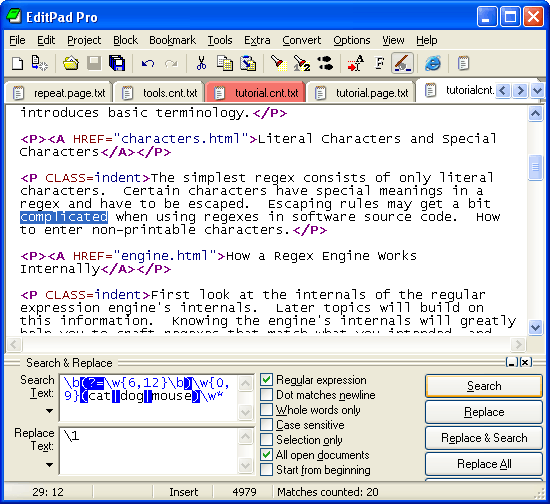

EditPad Pro is one of the most convenient text editors available on the Microsoft Windows platform. You can use EditPad Pro all day long without it getting into the way of what you are trying to do. When you use search & replace and the spell checker functionality, for example, you do not get a nasty popup window blocking your view of the document you are working on, but a small, extra pane just below the text. If you often work with many files at the same time, you will save time with the tabbed interface and the Project functionality for opening and saving sets of related files.
What's more, a native Linux version of EditPad Pro is now available too. If you are moving from Windows to Linux, or using both Windows and Linux at the same time, EditPad Pro is the text editor that makes you feel at home running Linux.
(continued below screen shot)

EditPad Pro's regex flavor is almost identical to the one used in Perl 5. Only the extensions that only make sense in a programming language are not available. All regex operators explained in the tutorial on this website are available in EditPad Pro.
EditPad Pro integrates with RegexBuddy. You can instantly fire up RegexBuddy to edit the regex you want to use in EditPad Pro, or select one from a RegexBuddy library.
Pressing Ctrl+F in EditPad Pro will make the search and replace pane appear. Mark the box labeled "regular expressions" to enable regex mode. Type in the regex you want to search for, mark or clear "start from beginning" and "all open documents" as you see fit, and click the Search button. EditPad Pro will then highlight the first search match, and automatically clear "start from beginning". Click again on the Search button to continue searching for the second match, after the first. If no further matches can be found, EditPad Pro will tell you so, and automatically mark "start from beginning" so you can start all over again, if you want.
Replacing text is just as easy. First, type the replacement text, using backreferences if you want, in the Replace box. Search for the match you want to replace as above. To replace the current match, click the Replace button. To replace it and immediately search for the next match, click Replace & Search.
You can use the Replace All button to replace all search matches. Note that the Replace All button takes into account whether "start from beginning" and "all open documents" are marked. If "start from beginning" is not marked, then only matches after the text cursor will be replaced.
Like many modern text editors, EditPad Pro supports syntax coloring or syntax highlighting for various popular file formats and programming languages. What makes EditPad Pro unique, is that you can use regular expressions to define your own syntax coloring schemes for file types not supported by default.
To create your own coloring scheme, all you need to do is download the custom syntax coloring schemes editor (only available if you have purchased EditPad Pro), and use regular expressions to specify the different syntactic elements of the file format or programming language you want to support. The regex engine used by the syntax coloring is identical to the one used by EditPad Pro's search and replace feature, so everything you learned in the tutorial on this website applies.
The advantage is that you do not need to learn yet another scripting language or use a specific development tool to create your own syntax coloring schemes for EditPad Pro. All you need is decent knowledge of regular expressions.
EditPad Pro works under Windows 95, 98, ME, NT4, 2000 and XP. The Linux version works on all popular distributions (SuSE, Mandrake, etc.) for Intel and AMD CPUs. For more information on EditPad Pro, please visit www.editpadpro.com. You can download the free evaluation version, and buy the full version for US$ 39.95. Certainly not too expensive when you look at what you get. Incidentally, this website was entirely created using EditPad Pro, except for the graphics.
Page URL: http://www.Regular-Expressions.info/editpadpro.html
Last Updated: 22 September 2004
Copyright © 2003-2005 Jan Goyvaerts. All rights reserved.
| Regex Tools |
| grep |
| PowerGREP |
| RegexBuddy |
| General Applications |
| EditPad Pro |
| Languages & Libraries |
| Delphi |
| Java |
| JavaScript |
| .NET |
| PCRE |
| Perl |
| PHP |
| Python |
| Ruby |
| More Information |
| Introduction |
| Quick Start |
| Tutorial |
| Tools and Languages |
| Examples |
| Books |
| Reference |
| About This Site |
| Download and Print |
| PowerGREP 3 |
| Use regular expressions to search through large numbers of text and binary files, such as source code, correspondence, server or system logs, reference texts, archives, etc. Quickly find the files you are looking for, or extract the information you need. Look through just a handful of files, or thousands of files and folders. |
| Perform comprehensive text and binary replacement operations for easy maintenance of web sites, source code, reports, etc. Preview replacements before modifying files, and stay safe with flexible backup and undo options. |
| Work with plain text files, Unicode files, binary files, files stored in zip archives, and even MS Word documents, Excel spreadsheets and PDF files. Runs on Windows 98, ME, NT4, 2000 & XP. |
| More information |
| Download PowerGREP now |